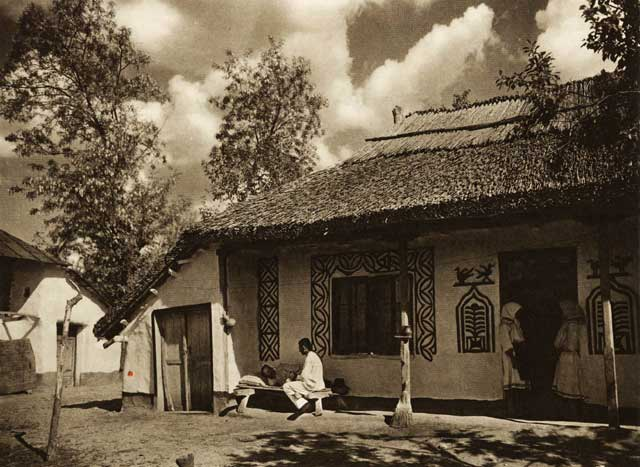

Arhitectura tradițională românească
Casele tradiționale românești
Casele tradiționale românești au avut și încă mai au rolul de asigurare a adăpostului permanent și durabil, ceea ce este caracteristic populațiilor sedentare. La ora actuală, locuintele țărănești se află sub cercetarea etnografilor, arheologilor, istoricilor și arhitecților.
În articolul Arhitectura tradițională încotro? din revista Datini, nr 1/1998, autoarea Georgeta Stoica încearcă să găsească niște soluții, teoretice ce-i drept, dar pe baza unor argumente solide, care ar putea fi aplicate pentru a nu se ajunge la distrugerea totală a caselor românești țărănești.

Autoarea pornește de la poziția geografică a României, care este plasată la o răscruce de drumuri europene, între marile culturi: greacă, romană, bizantină, ceea ce a dus la favorizarea unor trăsături culturale specifice, România având legătură atât cu estul Europei, cât și cu vestul continentului. Un avantaj de milioane.
Cetățile de la malul Mării Negre, de pe Dunăre și Nistru, curțile domnești și boierești, mănăstirile, drumurile comerciale sau târgurile, toate orașele, împreună cu satele au avut un rol important în constituirea unității culturale a românilor.

De la argumentele generale, ajungem la cele individuale. În trecut, o gospodărie țărănească, oricât de mică ar fi fost, producea singură aproape tot ce era nevoie pentru familie. Satele erau adevărate vetre de viață, din toate punctele de vedere, inclusiv cel social, economic, istoric, antropologic. Tocmai această diversitate contribuie la varietatea arhitecturii populare.
Casa tradițională este poziționată separat față de anexele din gospodărie. Încăperile de locuit, cărora noi le spunem astăzi dormitoare, sunt grupate de-a lungul unei axe care arată direcția de orientare a ferestrelor și a ușilor casei (est, sud sau sud-est).
Bisericile fortificate săseşti din Transilvania
În sudul Transilvaniei, în Podișul Târnavelor, de la Mediaș la Saschiz și în Valea Hârtibaciului se află un important patrimoniu construit, o extraordinară moștenire istorică și culturală existentă din vremea când aceste zone erau locuite preponderent de sași.
La venirea lor în Transilvania, sașii au adus cu ei arhitectura occidentală atât în domeniul religios, cât și în cel laic. Recunoști ușor satele săsești, cu casele colorate aliniate disciplinat una după alta, frumos decorate și cu porți mari din lemn.